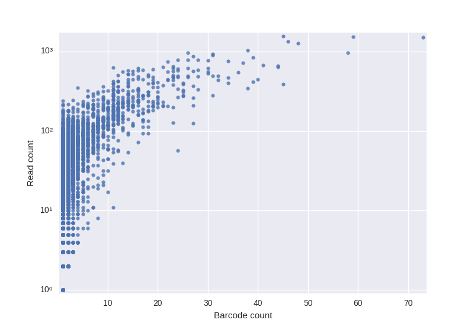

Content
Motivation
Construction of an antibody repertoire is an important preliminary step in various immunological applications. Repertoire construction is a complex clustering problem with the largest obstacle of distinguishing natural diversity of antibodies from PCR errors. Barcoding helps to separate these two sources of variations in IG sequences and makes PCR error correction possible while preserving even close antibody variations. Also barcoding allows to quantify antibodies more precisely. One can estimate number of corresponding antibodies through the number of reads in the cluster. However, as the following figure shows, such estimation can be very inaccurate.
|  |
Algorithm
BarcodedIgReC takes as an input paired-end or single reads with unique molecular identifiers (UMIs). Reads should cover variable region of antibodies. BarcodedIgReC corrects sequencing and amplification errors and constructs an antibody repertoire.
The algorithm performs the following steps:- VJ Finder: V, J labeling, cleaning, aligning and cropping input reads.
- Clustering using barcode information: read clustering inside barcodes and barcode error correction.
- IgReC:Apply IgReC tool, which constructs repertoire from non-barcoded reads, to the clustering output. On this step we use custom clustering parameters for IgReC to merge only almost identical sequences.
Clustering using barcode information
On this step BarcodedIgReC focuses on dealing with artifacts which barcoding introduces into the data.
- Barcode errors: since barcoded sequences undergo amplification, some reads in barcoded Rep-seq datasets have amplification errors within barcodes.
- Barcode collisions: in a model experiment barcodes are randomly and uniformly generated. In particular, we expect certain number of distinct molecules get identical barcodes attached. Too short barcodes or a bias introduced during barcode generation can only increase the collision probability.
- Chimeric reads: about 1-8% of reads in Rep-seq datasets are chimeric. When not filtered out, they introduce artificial diversity into the antibody repertoire.
Manual and citations
BarcodedIgReC manual can be found here (TBD).
Citation: TBD